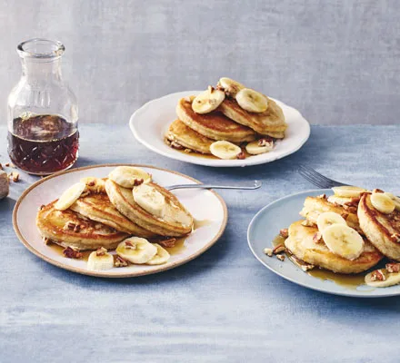

Description
Turn overripe, blackened bananas into sweet and fluffy American-style pancakes. Serve with syrup and crunchy, toasted pecan nuts as a delicious brunch treat
Ingredients
- 350g self-raising flour
- 1 tsp baking powder
- 2 very ripe bananas
- 2 medium eggs
- 1 tsp vanilla extract
- 250ml whole milk
- butter, for frying
- maple syrup, to serve
Steps
- Sieve the flour, baking powder and a generous pinch of salt into a large bowl. In a separate mixing bowl, mash the very ripe bananas with a fork until smooth, then whisk in the eggs, vanilla extract and milk. Make a well in the centre of the dry ingredients, tip in the wet ingredients and swiftly whisk together to create a smooth, silky batter.
- Heat a little knob of butter in a large non-stick pan over a medium heat. Add 2-3 tbsp of the batter to the pan and cook for several minutes, or until small bubbles start appearing on the surface. Flip the pancake over and cook for 1-2 mins on the other side. Repeat with the remaining batter, keeping the pancakes warm in a low oven.
- Stack the pancakes on plates and top with the banana slices, a glug of sticky maple syrup, if you like
Return to top
Return to main page